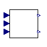
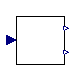
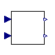

Distributed PV Model
Extends from Modelica.Icons.Package (Icon for standard packages).
| Name | Description |
|---|---|
| PlantPVD1 | Simple representation of the basic control of a PV system |
| Controller | Plan Control |
| GenerationTripping | Calculating the tripping response |
| PQPriority | P-Q priority module |
Simple representation of the basic control of a PV system
Extends from OpenIPSL.Electrical.Essentials.pfComponent (Partial model containing all the parameters for entering power flow data).
| Name | Description |
|---|---|
| Power flow data | |
| S_b | System base power [V.A] |
| V_b | Base voltage of the bus [V] |
| fn | System frequency [Hz] |
| P_0 | Initial active power [W] |
| Q_0 | Initial reactive power [var] |
| v_0 | Initial voltage magnitude [1] |
| angle_0 | Initial voltage angle [rad] |
| displayPF | Display power flow: |
| Plant parameters | |
| M_b | PV plant base power [V.A] |
| PVD1 Model Parameters | |
| Imax | Maximum allowable total converter current [1] |
| PqFlag | Priority on current limit flag; true: P prio., false: Q prio. |
| Tg | Inverter current regulator time constat [s] |
| Xc | Line drop compensation reactance [1] |
| Qmx | Maximum reactive power [1] |
| Qmn | Minimum reactive power [1] |
| v0 | Low voltage threshold for Volt/Var Control [1] |
| v1 | High voltage threshold for Volt/Var Control [1] |
| dqdv | Voltage/Var droop compensation |
| fdbd | Frequency deadband over frequency response [1] |
| Ddn | Down regulation droop |
| vr_recov | Amount of generation to reconnect after voltage disconnection |
| fr_recov | Amount of generation to reconnect after frequency disconnection |
| Ft0 | Frequency tripping repose curve point 0 [1] |
| Ft1 | Frequency tripping repose curve point 1 [1] |
| Ft2 | Frequency tripping repose curve point 2 [1] |
| Ft3 | Frequency tripping repose curve point 3 [1] |
| Vt0 | Voltage tripping repose curve point 0 [1] |
| Vt1 | Voltage tripping repose curve point 1 [1] |
| Vt2 | Voltage tripping repose curve point 2 [1] |
| Vt3 | Voltage tripping repose curve point 3 [1] |
| Parameter mask | |
| enableS_b | Enable S_b in parameter list |
| enableV_b | Enable V_b in parameter list |
| enablefn | Enable fn in parameter list |
| enableP_0 | Enable P_0 in parameter list |
| enableQ_0 | Enable Q_0 in parameter list |
| enablev_0 | Enable v_0 in parameter list |
| enableangle_0 | Enable angle_0 in parameter list |
| enabledisplayPF | Enable displayPF in parameter list |
| Name | Description |
|---|---|
| p |

OpenIPSL.Electrical.Solar.PowerFactory.WECC.PVD1.ControllerPlan Control
| Name | Description |
|---|---|
| Imax | Maximum allowable total converter current [1] |
| PqFlag | Priority on current limit flag: 1=P prio.; 0 = Q prio. |
| Tg | Inverter current regulator time constat [s] |
| Xc | Line drop compensation reactance [1] |
| Qmx | Maximum reactive power [1] |
| Qmn | Minimum reactive power [1] |
| v0 | Low voltage threshold for Volt/Var Control [1] |
| v1 | High voltage threshold for Volt/Var Control [1] |
| dqdv | Voltage/Var droop compensation |
| fdbd | Frequency deadband over frequency response [1] |
| Ddn | Down regulation droop |
| vr_recov | Amount of generation to reconnect after voltage disconnection |
| fr_recov | Amount of generation to reconnect after frequency disconnection |
| Ft0 | Frequency tripping repose curve point 0 [1] |
| Ft1 | Frequency tripping repose curve point 1 [1] |
| Ft2 | Frequency tripping repose curve point 2 [1] |
| Ft3 | Frequency tripping repose curve point 2 [1] |
| Vt0 | Voltage tripping repose curve point 0 [1] |
| Vt1 | Voltage tripping repose curve point 1 [1] |
| Vt2 | Voltage tripping repose curve point 2 [1] |
| Vt3 | Voltage tripping repose curve point 3 [1] |
| Qref | Reactive power refrence [1] |
| Pref | Reactive power refrence [1] |
| u_0 | Initial voltage [1] |
| Name | Description |
|---|---|
| Vt | |
| It | |
| freq | |
| Ip | |
| Iq |

OpenIPSL.Electrical.Solar.PowerFactory.WECC.PVD1.GenerationTrippingCalculating the tripping response
| Name | Description |
|---|---|
| Lv0 | Tripping repose curve point 0 |
| Lv1 | Tripping repose curve point 1 |
| Lv2 | Tripping repose curve point 2 |
| Lv3 | Tripping repose curve point 3 |
| recov | Revovery amount for reconnection |
| Tfilter | Best to set about the time step value for fixed-step solvers |
| Name | Description |
|---|---|
| u | |
| TrpLow | |
| TrpHigh |

OpenIPSL.Electrical.Solar.PowerFactory.WECC.PVD1.PQPriorityP-Q priority module
| Name | Description |
|---|---|
| PqFlag | Priority on current limit flag: 1=P prio.; 0 = Q prio. |
| Imax | Maximum allowable total converter current [1] |
| Name | Description |
|---|---|
| Ip | |
| Iq | |
| Iqcmd | |
| Ipcmd |